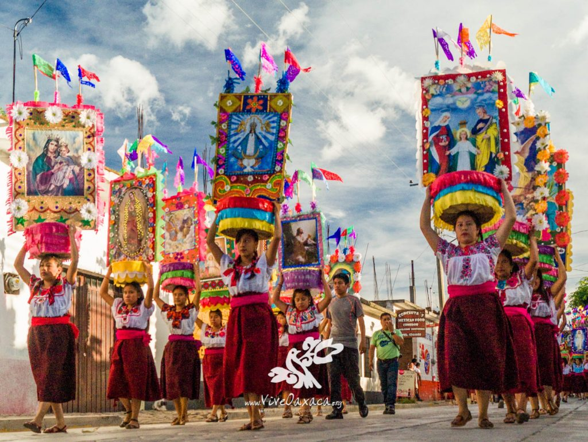
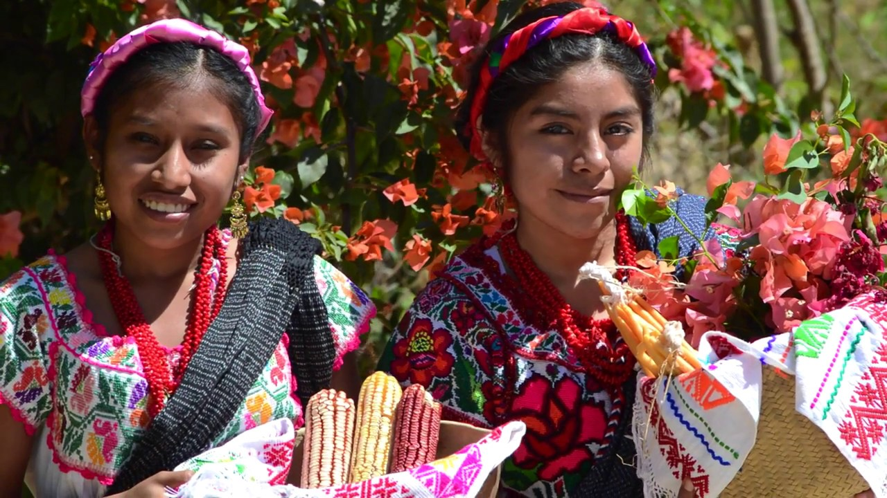
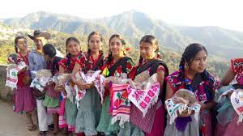

La lengua Chatino es una familia de lenguas indigenas
que se habla al sur del Estado Mexicano de Oaxaca,
Forma parte del grupo de lenguas zapotecas de la rama orienta.
El nombre chatino empleado historicamente por la poblacion mexicana
designa a un grupo indigena, dicho nombre es la forma castellanizada
de cha´tñan que significa palabra en voz baja.
IMAGEN
AUDIO



Esta lengua es hablada por unos ciencueta mil individuos
pertenecientes al grupo etnico chatino, cuyo territorio etnico se localiza en Oaxaca.